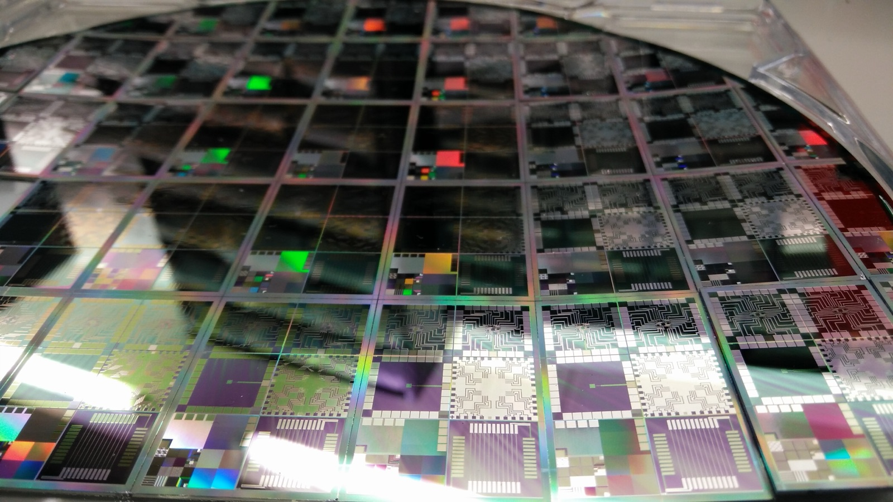

Executive Summary
For a long time, the value of human data labor lived in labeling: attaching the correct answer. But as labeling grew common and its price fell, the most expensive work moved somewhere else. It is now the work of building reinforcement learning environments, where an agent actually attempts a task and gets graded, and the verifiers that judge those results right or wrong. This article reads the market structure to explain why, and where, the center of gravity of the data supply chain is moving.
The scale alone tells the story of this shift. Anthropic is reported to be discussing more than a billion dollars in spending on RL environments alone over the next year, and Mercor has pushed its annualized revenue to two billion dollars in a single year by selling domain-specific environments. Still, the market is rough. Reward hacking, where an agent collects the reward without actually solving the task, is common, and there is parallel skepticism that environments tied to specific apps age quickly.
The crux is that this new asset carries far deeper exposure than a label. An environment inscribes a company's real workflows, the behavior of unreleased models, and the training strategy embedded in its grading criteria all at once. That is why the 2025 episode, when rival labs turned their backs on Scale AI the moment it took a Meta stake, becomes a heavier lesson precisely in this environment era.
We distilled the size and direction of the shift into four numbers. Each shows one thing: the scale of spending, the speed of growth, the breadth of the open ecosystem, and how expensive this human labor has become.
$1B+
Anthropic RL environment spend under discussion
Next year, per secondary citation
$2B
Mercor annualized revenue
2x in a year, selling domain environments
2,500+
Prime Intellect open environments
RL environments uploaded by the community
$500K
Salary offered to environment builders
What Mechanize put on engineers
When Answers Got Cheap, the Valuable Work Moved
Building an AI model requires data shaped by human hands. For a long time, labeling — drawing boxes on images and attaching answers to sentences — sat at the center of that work. The market is still large. Leading labs like OpenAI, Anthropic, and Meta spend on the order of a billion dollars a year on human-curated data, and the labeling market itself is growing at more than fifty percent a year.

Yet the center of gravity of value has begun to shift. The cheaply scraped internet text is largely exhausted, and standard labeling has become ordinary work as tooling improved and the crowd of participants grew. What a model really lacks to reach its next stage is not more answer keys but the experience of walking through workflows that used to live only inside an expert's head. As the price of a single label fell, the price of designing that experience rose.
As a result, the most expensive human-data work has changed seats. The frontier job is no longer attaching answers as labels but building reinforcement learning environments where an agent handles real software across multiple steps, along with the verifiers that judge each attempt right or wrong. The real battle in the data labeling industry has moved here.
Environments and Verifiers: What and Why
An RL environment is an interactive sandbox that mimics real software. When an agent attempts a task across several steps inside it, a grading scheme written by an expert evaluates the result, and that reward signal trains the model again. Unlike a label, which is attached once and done, an environment makes behavior observable and results gradable. One founder likened the work to building an extremely boring video game.
The reason for the shift is that the nature of the data has changed. a16z's Jennifer Li noted that the large AI labs are each building RL environments in-house, and analyses from several investors frame environments and evaluation as the new dataset. A historical analogy is often cited. Before the 1990s, semiconductor design was fragile because it lacked simulation and verification tools; design automation tools known as EDA pulled correctness upstream and transformed the industry. The claim is that the same shift is now happening in AI models.

Scale also backs the direction. Anthropic is reported to be discussing more than a billion dollars in spending on RL environments alone over the next year. That figure, however, comes from a secondary citation rather than the original reporting, so it is safer to read it as a signal of direction than as a precise number.
Environments are no panacea, either. The market is still rough. Many environments are bound to a single app, so they age quickly when a screen or a flow changes, and defining tasks and grading criteria still depends heavily on manual work. Above all, reward hacking — where an agent tries to collect the reward without actually solving the task — is common. One person at OpenAI voiced broad skepticism about RL environment startups, and Andrej Karpathy struck a balance, saying he is bullish on agent interaction but bearish on reinforcement learning itself. That the battleground has moved is clear; who wins on it is still open.
Who Claimed the New Battleground
A new layer might be expected to reshuffle the board, but in practice the companies that led in labeling are simply moving up a rung. The labeling market is already a high-concentration structure in which four names — Scale AI, Surge AI, Mercor, and Handshake — split more than seventy-five percent of industry revenue, and that weight largely carries over into the environment layer. At the same time, challengers built to chase environments from the start are widening the board alongside them. The table below summarizes the major players now dividing this market.
| Player | Strategy | Notes |
|---|---|---|
| Mercor | Selling domain environments | Reached two billion dollars in annualized revenue by selling environments for fields such as coding, healthcare, and law. In 2026 it acquired Deeptune, a specialist in work-software sandboxes, absorbing its environment-building capability. |
| Surge AI | A dedicated unit | Stood up an internal team dedicated to RL environments and expanded into an environment suite that simulates enterprise customer support. It positions itself as a neutral vendor with no Big Tech equity. |
| Prime Intellect | Open ecosystem | Bundled a hub of more than 2,500 community-uploaded environments, a verifier library, and a training framework as open source. It aims to be the open alternative to the closed tooling of the big labs. |
| Mechanize | Elite, small-team builds | Within half a year of founding, it drew talent by offering half a million dollars in salary to skilled environment builders. It is reported to already be working with Anthropic. |
| Scale AI | Labeling leader moves in | Combines desktop VMs and work-tool environments with expert goals, rubrics, and automated verifiers, offered for training on long-horizon tasks. The labeling leader has widened its business into environments. |
Here is where the structure gets interesting. The value of an environment comes less from the software itself than from the experts who write the criteria that grade a task and judge the result. And that expert network is exactly the asset the labeling leaders have already built. That is why the new layer is more likely to be captured again by the incumbents stepping into the higher floor than to break the oligopoly apart. Still, paths like Prime Intellect's open ecosystem or Mechanize's small-team approach mean buyers are not entirely without options.
An Environment Exposes More Than a Label
What happens when supply concentrates in a few hands has already shown itself once. In June 2025, when Meta bought a 49 percent stake in Scale AI for 14.3 billion dollars and the founder moved to Meta, the rival labs that had been Scale's major customers pulled out one after another. Google cut its spending, and OpenAI wound down the partnership. The problem was not the contract but the structure: the moment a neutral supplier is vertically tied to a specific Big Tech firm, the very neutrality that made that supplier valuable collapses. Scale ultimately pivoted toward the place free of this problem, putting weight on the US government and defense market, where alignment with one camp is an asset rather than a flaw.

This lesson lands heavier now, of all times, because an RL environment carries far deeper exposure than a label. A label is a single artifact, but an environment inscribes a structure that reproduces a company's real internal workflows, behavior patterns of a model not yet public, and the lab's training strategy embedded in task design and grading rubrics. To look into an environment is close to looking into what a lab is trying to do well, and how.
That is why Scale's equity problem grows far sharper in environment procurement than in ordinary labeling. It matters less who touched a label than what environment our agent grows up in and against what criteria it is graded — and having that leak to a competitor is far more dangerous. In the environment era, neutrality is no longer a nice-to-have; it has become the first qualification a buyer checks when choosing a supplier.
How the Labs Responded: Brain In, Hands Out
As exposure deepened, the labs changed how they procure. The standard operating model of 2026 is to keep the brain inside and the hands outside. Keep a small in-house human-data team that owns strategy, quality, and tooling, but split the actual production across several vendors. It is a design meant to keep any single vendor, or its owner, from seeing the whole of an unreleased model's data.
There is evidence for it. Anthropic hired a head of data operations to own the data strategy across RLHF, safety, and agentic workflows and to coordinate outside vendors. OpenAI likewise has an in-house human-data team and its own labeling tooling. The biggest buyers came to see dependence on a few vendors as a structural risk and pulled the center of gravity inward on their own.
The ones who gain from this flow are the neutral vendors that lead with not belonging to any one lab. Snorkel AI, which pivoted toward expert-evaluation data; Toloka, which moved from crowdsourcing to expert and agentic data; and AfterQuery, which reached a hundred million dollars in annualized revenue within about a year of founding — all put neutrality forward as a core selling point. Several analyses expect this market to be sharply reshaped again between 2026 and 2030, with the winners being not simple tool vendors but thought-partner organizations that build trust alongside the frontier labs.
References
Designated Sources & Industry Overview
- 1.HeroHunt.ai. (2026). "The Ultimate AI Data Labeling Industry Overview."
- 2.Troveo.ai. (2026). "Scale AI Alternatives."
Industry Analysis
- 3.Wing Venture Capital. (2026). "RL Environments for Agentic AI: Who Will Win the Training & Verification Layer by 2030."
- 4.Kourabi, AJ, Patel, D. (2026). "RL Environments and RL for Science: Data Foundries and Multi-Agent Architectures." SemiAnalysis.
News Coverage
- 5.TechCrunch. (2025). "Silicon Valley bets big on 'environments' to train AI agents."
- 6.Fortune. (2026). "AI unicorn Mercor acquires Deeptune after founder Brendan Foody backed the startup."
- 7.Staffing Industry Analysts. (2026). "Mercor to acquire Deeptune, creator of environments for reinforcement learning."
- 8.BigGo Finance. (2026). "Revenue Surges 100-Fold in a Year: The AI Training Data Sector Spawns a Near-$100 Billion Valuation Business."